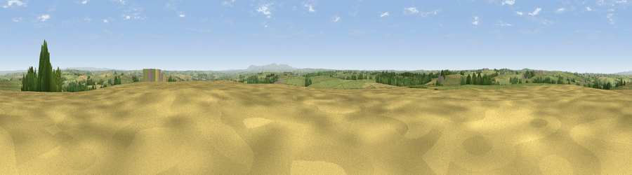

Cudemoor
#14255 in England · top 25% of its area beats it · near Peters MarlandWhere it is
The exact computed spot (SS 46783 14536). Click the marker for map links.
The view, rendered

A 360° render of this exact spot computed from the terrain model, tree cover and land cover — summer colours, afternoon light, calibrated against photographs of famous viewpoints. Real trees, hedges and buildings will differ in detail.
The panorama
Grey silhouette: terrain skyline in each direction (720 bearings, Earth curvature and refraction included). Dashed green: skyline with trees (+15 m) and buildings (+8 m) as obstacles. Blue strip: how far the ground is visible on each bearing.
Where the view opens
Wedge length = distance to the farthest visible ground on that bearing (vegetation-aware). Rings at 10, 25 and 50 km.
What fills the view
75% grassland · 16% cropland · 8% woodland · 1% built-up
Angular shares of the visible panorama (visual magnitude), not map area. Landscape diversity 0.33 (0–1 Shannon).
Key numbers
More beautiful places nearby
The staircase of upgrades: each row has a higher view potential than everything closer. Driving times are estimates from straight-line distance, calibrated against real road routing — check an actual route before setting out.
| Place | Direction | Drive | Score |
|---|---|---|---|
| Viewpoint near Little Torrington | E · 3 km | ~8 min | 59.6 |
| Viewpoint near Little Torrington | ENE · 3 km | ~8 min | 62.8 |
| Viewpoint near Petrockstowe | SSE · 6 km | ~13 min | 65.5 |
| Viewpoint near Buckland Brewer | NW · 9 km | ~17 min | 66.6 |
| Viewpoint near High Bullen | NE · 9 km | ~18 min | 71.2 |
| Viewpoint near Bideford | N · 11 km | ~20 min | 73.5 |
| Viewpoint near Parkham | NW · 12 km | ~23 min | 81.7 |
| Viewpoint near Bucks Mills | NW · 13 km | ~24 min | 84.0 |
50.90990, -4.18072 · source: dobih hill · position refined by local search. Computed location — check access rights before visiting.